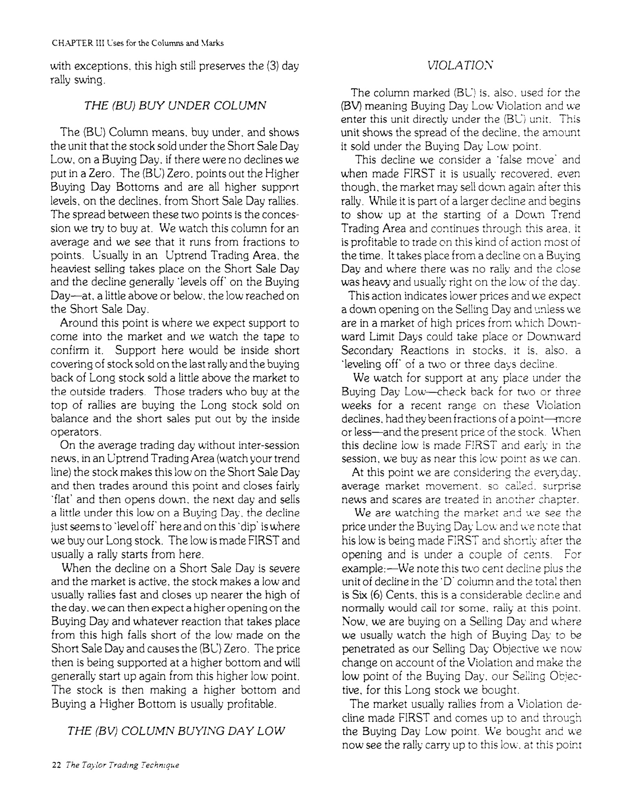
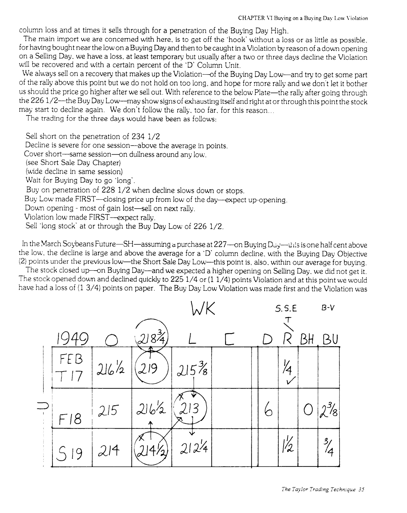
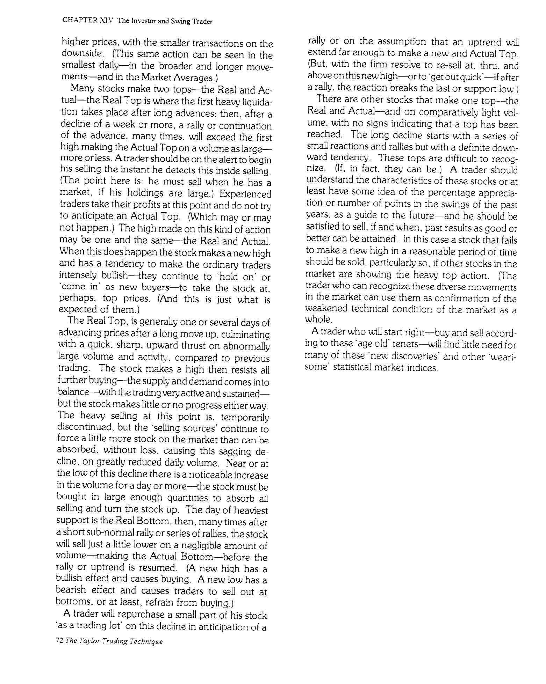

Buying Day (Day 1): The first day of the 3-day cycle. Look for support near the previous day's low and buy. The low made on this day is your entry point.
Selling Day (Day 2): The second day. Expect the rally to continue and penetrate the Buying Day's high. Sell your long position at or through this penetration.
Short Sale Day (Day 3): The final day of the cycle. Expect price to penetrate the Selling Day's high. Short sell at this penetration, then expect a decline.
D Column (Decline): The spread from the Short Sale Day high to the Buying Day low — measures the decline in points.
R Column (Rally): The spread from the Buying Day low to the Selling Day high — measures the recovery rally.
BH (Buy Day High): Number of points the price on a Buying Day sold above the Short Sale Day high point.
BU (Buy Under): Number of points the price on a Buying Day sold below the previous day's (Short Sale Day) low.
BV (Buying Day Low Violation): When price breaks below the Buying Day low — a "false move" that is usually recovered.
T-L (Three Day): The total spread from Buy Day low to Short Sale Day high — the full 3-day swing measurement.
X Mark: The trading objective (high or low) was made FIRST in the session. Favorable — trade is quick and decisive.
Check Mark (✓): The objective was made LAST. Less favorable — requires watching the entire session.
Trading Area: A range between intermediate swing highs and lows, typically moves of five cents or points or more.
Uptrend Trading Area: A series of higher bottoms and penetrated selling objectives. Rallies are stronger than declines.
Downtrend Trading Area: A series of lower tops and failed penetrations. Violations and Buy Under moves are more frequent.
Objective Point: The specific price level where buying, selling, or short selling is expected based on the book's records of past highs and lows.
Taylor opens with a declaration of what his method is not. It is not a charting system. It does not depend on daily telegrams, weather reports, open interest, or market commentary. It ignores commodity economics and broader speculation entirely. The Book Method is a hand-kept ledger in tabular form that tracks daily prices on the tape and points out the important stopping places for buying and selling. It concerns itself wholly with the technical side of the market — the minor movements of prices as they appear on the tape — and it trains the trader to depend on his own judgment rather than the daily "dope" that fills the board room.
The trader using this method makes his decision before the market opens. He does not reach for the gossip file when he arrives. He is ready to trade at the opening or shortly after, unencumbered by outside opinions. The prices printed on the tape will appear contrary to most news, Taylor insists, because they have already discounted everything. A grain-stock trader is essentially an operator, a manipulator, and a trader must understand the fundamentals of manipulation because it enters into the market at all times. A good manipulator is not necessarily a good trader, but both must understand how buying and selling moves prices.
Taylor then walks through the anatomy of a manipulated move. An operator starts by buying stock or grain above the market by a small distance — four or five cents or points — clearing the resting orders of traders who are "hung up" and want to get out. This relieves selling pressure, establishes an upward trend, and attracts public buying. Rising prices bring in professionals and outside buyers, filling the stock with demand. The operator is compelled to buy more than he planned. When outside demand peaks, he sells it short. The experienced tape reader would notice the slackening of the rise and the absence of inside buying, and would sell and sell short. The operator then buys back on the decline, covers his shorts, and supports the stock at lower levels. He repeats this process — alternately buying and selling on the way up — all the way to the top of the rise.
"It is a fact and the records show it, for many years back that the market has a definite 1-2-3 rhythm, varied at times with an extra beat of 1-2-3-1 and at times 5."— George Douglass Taylor
This is the core discovery. From the bottom of a minor move to the top requires about three days on average. The corrective decline is completed in one, possibly two days. The fourth and fifth days, when they appear, are simply the first and second days of a new cycle. Taylor observes that this rhythm holds true in both Bull and Bear trends, and that these occasional variations occur with surprising regularity. Three days constitute one trading cycle: Day 1 is the Buying Day, Day 2 the Selling Day, and Day 3 the Short Sale Day.
On a Buying Day you expect support and watch the tape to confirm it and for a rally to start. On a Selling Day you expect selling and watch for confirmation of selling and a reaction to follow. On a Short Sale Day you expect hesitant action of the rise, watching whether selling is stronger than buying — if buying is overcome, you expect a decline. The trader using the Book Method has a choice: he can trade each day with its specific Objective, or he can use the Three Day Method — buying and then selling every third day. Both approaches are profitable.
Taylor classifies all stocks and grain futures together because they share the same pattern with little variation. A trader keeping a book on half a dozen stocks or grains can "spot" the active, wide-swinging ones and confine his trading to them. Each trading day is separated and designated for its own expected action. Everything else — all other actions and influences — is eliminated. The trader concentrates entirely on the specific Objective Point for that particular Buy, Sale, or Short Sale Day. Tape reading is difficult and requires long experience. The real heart of reading the tape, Taylor says, is the ability to detect concentrated buying and selling and to determine the trend of prices. Calculations must be made instantly, in your head, not with pad and pencil.
From a low on a Buying Day, thousands of transactions will occur before the price reaches the Short Sale Day Objective three sessions into the future. A strong close on a Buying Day with the high made FIRST and a penetration of the Short Sale Day Objective happens about fifty percent of the time in an Uptrend Trading Area. This represents the longest unbroken rally the minor trend can make. Taylor would never put out a short sale when the high was being made LAST on a Short Sale Day — he would wait for the high made FIRST on the next Buying Day, where a new cycle would be starting.
The physical book is a small spiral-bound notebook that the trader carries with him to the exchange. It records the yearly date above the first column, the name of the stock or commodity, and then columns for the month, starting day and date, followed by four columns for Opening, High, Low, and Close. Two grain options or stocks can be kept in each book. The trader enters daily prices for ten days or three swings, then goes back and circles the lowest price reached in the third column. This low point becomes a Buying Day. The high of the day before is marked as a Short Sale Day. Going back one more day, that high becomes a Selling Day. The trader continues circling in the same order back to the starting day and then carries forward: Buy Day, Sell Day, Short Sell Day, repeating indefinitely.

The book is always kept in this order and the continuity never changes. No lines are left open for Sundays or holidays — the market is considered a series of continuous sessions without a break. The D column shows the spread or decline from the Short Sale Day high to the Buying Day low. A zero means no loss in points. The R column records rallies where the Selling Day high exceeded the Buying Day high. The BH column tracks the highest point at which a stock sold on a Buying Day and how many points it sold through the Short Sale Day high. The BU column measures how far below the previous day's low the price sold on a Buying Day. The T-L column is used for the Three Day Method, showing the spread from Buy Day low to Short Sale Day high.
Two signal marks are the most important elements in the entire system. The X means that the Objective for Buying, Selling, or Short Selling was made FIRST in the session. The check mark means it was made LAST. These marks are placed inside the circles on Buy, Sell, and Short Sale Days at the close of each session. They tell the trader whether the high or low of the day was made first or last — information that directly forecasts the next day's probable action. Weekly totals appear in a wide column separated on the last day of the week, with the total of D column declines on the left and R column rallies on the right.
The D Column provides the raw data for judging how deep a decline is likely to be. By averaging past declines, the trader develops an expectation for what the spread from Short Sale Day high to Buying Day low should be. When the decline falls within or near this average, he expects support. When it exceeds the average, he is on alert for a deeper move. The column also points out the number of short sale opportunities and the total points available on the short side. Comparatively low-priced markets work in a narrow range; high-priced markets produce wider spreads, especially near expiration dates or after long upward moves in stocks.
A Decline Zero — when the rally from Short Sale Day low plus a wide up opening on Buying Day produces no decline at all — generally means nearby higher prices, sometimes for many days. The trader can anticipate it by watching whether the low of Buying Day holds at the same price or higher than the Short Sale Day high. The Rally Zero is the mirror image: no rally from a Buying Day low followed by a wide down opening on the Selling Day. It signals nearby lower prices and constitutes a Buying Day Low Violation — the low is usually made FIRST, and a rally generally starts from this point.
"Cover Short Sales and Buy, at or below the low of the previous day on a Buying Day." — Taylor's core trading rule
The R Column measures the rally from Buy Day low to Sell Day high and shows how much of the prior decline has been recovered. Taylor found that in recent past grain futures, the Selling Objective was penetrated 56% of the time — making these penetrations almost sure profits. The probable profit on a long trade equals the spread from the Buy Day low to the high at close, plus the amount of Selling Day penetration of the Buying Day high. The general trading rule is straightforward: sell your long stock at or through the high of the previous day, which is the high reached on the Buying Day.
The BU column (Buy Under) tracks how far below the Short Sale Day low the price fell on a Buying Day. A zero in this column — a Higher Buying Day Bottom — means the stock found support above the previous low. These higher bottoms are bullish signals showing that selling pressure is diminishing on each successive decline. In an Uptrend Trading Area, the heaviest selling takes place on the Short Sale Day and the decline generally "levels off" at a point near the Short Sale Day low.
The Buying Day Low Violation (BV) occurs when price breaks below the Buying Day low. Taylor calls this a "false move" — when made FIRST, it is usually recovered. While it may be part of a larger decline and the beginning of a Downtrend Trading Area, it is profitable to trade on this action most of the time. The trader watches for support at any place under the Buying Day low, checking back two or three weeks for the recent range on Violation declines, and buys as near the low as possible when the decline is made FIRST and early in the session.
When the stock reacts from the Short Sale Day high and makes a low on the Buying Day early in the session, then rallies and trades the rest of the session with the closing price nearer the high than the low, the trader puts an X in the Buying Day circle. The low was made FIRST — a favorable signal. The opening on the Selling Day will generally be up with a penetration of the Buying Day high. The Selling Objective would also be made FIRST with an X placed in its circle. The trader sells at or above this penetration and is out of the market without much delay. If the stock having sold through the Selling Day FIRST then rallies and closes high enough to indicate another up opening, the Short Sale Day circle would also be marked with X — a "strong spot" for a short sale.

When the objective is made LAST — signaled by a check mark — the trader must watch the entire session to complete his trade, consuming more time and introducing uncertainty. A Buying Day low made LAST with a flat close carries implications of a Buying Day Low Violation the following day. The ideal cycle occurs when a stock completes its move from Buy Day low to Short Sale Day high with all Objectives made FIRST. During other cycles, the signals are mixed — FIRST and LAST — caused by the real trend being interrupted by smaller rallies, declines, and cross-currents that run through every trading session. These interruptions, however, do not change the ultimate completion of the trading objectives. The book does this tracking almost automatically, pointing out the kind of trading day and what the signal marks show about which way price is most likely to go.
The insiders, operators, or forces pushing the market toward one objective create "false moves" — smaller trends that confuse ordinary traders. Taylor warns that the greatest care must be used in getting the signal marks correct, because the difficult but real trend follows these marks. Traders who buy and sell on rallies and declines during the day, entirely ignorant of which kind of day they are trading, will occasionally profit by accidentally hitting the real trend. But their next trade will be nothing more than a guess, and with that approach the ultimate result is a total loss.
The philosophy is precise: buy when the stock is on "bottom dead center" and the trend is just about to turn up. On a Buying Day, when the stock rallies from the low and the gain in points is sufficiently large, the trader sells out on the same day. The rally may put the price up to and through the high of the day before — the Short Sale Day — and the close may be strong. But Taylor sells out just before the close anyway, because the stock may open down the next day and spend the entire Selling Day without reaching the Selling Day Objective. The reason for the same-day exit is risk management: don't follow the rally too far and don't take chances with this kind of move. Secure your profits before the close.
The buying point itself is at or a little above or below the low of the previous day — the Short Sale Day low. The trader watches the range and spread on the Short Sale Day, the "sell off" from high to low, to determine what price he will likely have to pay the next day. When the close on the Short Sale Day is strong, he expects a higher opening on the Buying Day and waits for the price to decline from a high made FIRST. In a strong uptrend, the decline may "fall short" of reaching the Short Sale Day low — a Higher Buying Day Bottom — and these are generally profitable. The price opens up and rallies, making the high FIRST, then gives way grudgingly on the decline. The stock seems resilient, "sort of springs back from each low," and the Decline Column unit is usually small.
When the high is made FIRST on a Buying Day, the buying point will be made LAST. The stock may trade down with no indication to rally, and the close may be near the low of the day. In this case, Taylor would not buy at all — even if the price is lower than the Short Sale Day low. He would anticipate a Buying Day Low Violation and wait for it. The key insight is that the low made on a Buying Day is the low, regardless of whether it may later be violated. After buying at what he considers the correct place, the trader reverses his thinking entirely: he stops watching the price he paid and starts expecting the stock to rally and show a gain above this low at the close.
"NEVER AVERAGE A LOSS, SELL OUT IF YOU THINK YOU ARE WRONG AND THEN BUY BACK AGAIN WHEN YOU BELIEVE YOU ARE RIGHT."— Taylor
The temptation after buying near the low is enormous. The stock goes lower, causing a Violation. The low is made FIRST — a strong spot. It looks like averaging down would have been a "cinch" after the rally sets in. But Taylor forbids it absolutely. A trader takes losses when they are small. He does not hold on and hope for a rally. He sells out before the close, takes the small loss, and begins to anticipate a Buy Day Low Violation. The yearly statistics from the WK and CK plates tell the story: loss day swings run about 12% of total, and gain days about 88%. The daily trader can "trade on a shoe string" but must be in complete command of his cash at all times, taking small losses by selling out the instant he sees he is wrong.
A Violation must be made FIRST — it results from a Buying Day low made LAST the previous day with a flat closing. The flat close means that opening prices will likely be down, and the down opening is often the start of the Violation itself. The decline continues until it meets support, which comes mostly from inside short covering for profit and stabilization of the market. From the book's BV column, the trader knows the range of past Violations and their fractional limits. He watches the market closely for the decline to slow down and stop, then buys at or near the low when the activity quiets down and the market goes dead.
The rally from a Violation made FIRST is driven by short covering from the inside. The large short interest carries the price up to and through the LOW of Buying Day, where extended and over-extended shorts are forced to cover in haste. The rally is fast, active, and the spread between transactions is wide. Price reaches up to and through the HIGH of Buying Day — the extent depends on the size and urgency of the outside short interest. Taylor calls this pattern the "take off," and it starts with a "run in" of the shorts.
The recovery from the Violation is measured in percentages. Each eighth above the Violation low recovers a certain percent of the Real Decline (the D Column unit). The more the rally extends, the more of the decline is recovered. At times the rally "wipes out" all the D Column loss and more. Taylor always sells on a recovery of the Violation — the main concern is to get off the "hook" without a loss or as little as possible. He does not hold on too long, because at or through the Buying Day low, the stock may show signs of exhausting itself and start to decline again.
The statistics are revealing: about 50% of the time a trader can make his initial purchase on a Buying Day low where no Violation occurs. Violations happen about 35% of the time on average, during the total trading swings of a grain future or stock. When the Violation is deep and the D Column spread from Short Sale Day high to Buy Day low is considerable, the rally is more likely to start from the extreme low points. After two or three days, the Violation decline is usually recovered along with a certain percentage of the D Column unit.
When the low is made FIRST on a Buying Day and the closing price is up from the low, nearer the high of the day, the trader expects an up-opening and a penetration of the Buying Day high on the Selling Day. These penetrations occur more often in an Uptrend Trading Area. If the opening is up and wide from a strong closing on the Buying Day, the trader sells "at the market" without waiting for the next transaction after the opening price. The price may go higher — and many times it does — but the opening price may also be the high, with a decline starting from the very next transaction. Taylor sells and is not concerned with how high the price may go after he is out.
When the opening is down on a Selling Day, or when a gain at close of Buying Day is partly lost on the opening, the trading rule changes. If the opening is at or near the Buying Day closing price, sell out immediately. If the opening is down and declining further, sell on any rally from the low of this decline — the selling point becomes at, through, and above the Low of Buying Day, which now becomes the Primary Selling Objective instead of the Buying Day High. This flexibility in adjusting the selling objective based on actual price action rather than rigid targets is one of the system's strengths.
The Yearly Tables show approximately 66 penetrations on CK May Corn and 55 penetrations on WK May Wheat out of a total of 100 Selling Objectives. These are the clear sailing trades — strong closings on Buying Days, up-openings, penetrations. The trouble spots are the failures to penetrate and the Violations, and there is no way to anticipate them except by watching news announced after the market closes. Taylor's advice: "we follow the market and never try to make it."
The setup requires a strong close on the Selling Day, indicating an up-opening and continuation of the uptrend. When the stock opens up and penetrates the Selling Day high on the Short Sale Day, the trader watches for resistance. The selling at this point is inside selling — it gradually overcomes the unwise long buying by traders at the top of the rally. Either it stops the rally abruptly and the decline starts right from the opening prices, or the rally is stopped in its tracks.
Taylor notes a striking manipulation technique: at the top of a Short Sale Day, one or two futures or stocks will be made to appear strong by being "put up" a little higher, creating an air of strength and testing buying power, while the operators put out short sales in all the others under the cover of this artificial strength. The same action happens in reverse on a Buying Day — one or two issues are "put down" for a new low while all others hold firm. The trader makes his short sale at and through and above the high of the Selling Day, with the most favorable action being the high made FIRST on penetrations of Selling Day highs.
After the short sale, if the reaction is orderly and the movement is in "no hurry" with the stock just trading down, the trader stays short and anticipates covering the next day on the Buying Day. If the sell-off is severe with activity, he covers his short sale on dullness near the low of the reaction and takes his profit. Any profits from the short sale can be used to reduce the cost of buying at a Higher Bottom on the next Buying Day — a form of averaging carried out in two separate trades rather than the dangerous practice of averaging a losing position.
A short sale put out at the high of Buying Day made FIRST on the penetration of the Short Sale Day high is generally a weak short sale. Prices are relatively low — especially in an Uptrend Trading Area — and the decline is of short duration when the trend is just starting up from the last Downtrend Area. The trader covers this short sale quickly when the stock acts "tight" and resists an easy sell-off, then looks for a point to go long. The critical rule: never sell a stock short on a Buying Day when it makes the low FIRST by opening down, even if it is the third or fourth day of the rally. There is not enough spread and you cannot make a profit with reasonable certainty.
In a strong uptrend, the stock makes the high FIRST on a Buying Day about 35% of the time. The reason for shorting at this point is that the rally from the last Buying Day low has been in progress for four days, and the upswing may be exhausting itself. When preceded by a Buying Day Low Violation, the high is being made after three days of rally. Taylor's approach is pragmatic: take the short-sale profit quickly, strengthen your position for the next trade, and be ready to buy at a Higher Bottom if the decline does not carry as far on the next Buying Day.
At the top of an Uptrend Trading Area, after one or two weeks of advance with five or more cents or points of price gain, the extreme high is generally made on a relatively fast, active, wide move with volume. The stock then breaks back under this high, with trading and closing price slightly below the top. This is inside selling by those who think the price is high enough, at least temporarily. Enough selling to stop the rise but not enough to break the price wide open. At the bottom of Downtrend Trading Areas, the same action occurs in reverse: the extreme low is made on heavy volume, the stock rallies, but the decline that follows takes place on greatly decreased volume — the heavy buying at the low for support is held.
Failures to penetrate Buying or Selling Objectives happen approximately 40% of the time on average — a very definite part of the method. Failures to penetrate at the top are usually found in Downtrend Areas and when the trend is changing. They are forecast by weak or flat closings on Buying, Selling, and Short Sale Days. At the bottoms, rallies that hold before the close forecast up-openings and failures to penetrate on the downside. Weak closings forecast failures to penetrate "top side" on rallies after declines. Strong closings forecast failures to penetrate "down side" on declines after rallies. These forecasting rules from closings are among the most reliable signals in the entire system.
The trend line runs alongside the date column and marks the intermediate swings of the market. Trading Areas are the ranges between swing highs and lows — moves of five or more cents or points. The trader watches the highs and lows of these areas, the number of points moved in each direction, and particularly the time consumed after a move of two or three weeks. In a Seasonal Trend Upward Swing, he expects penetrations at the tops of Trading Areas and watches for support and progressive lifting of bottoms after declines. In Down Trends, he expects not only two decline sessions but also Buying Day Low Violations before rallies start.

In fast upward movements, the trader observes Higher Buy Day Bottoms and penetrated Selling Objectives. The D and R Column units tell the story: small D Column units with large R Column units signal continuation of the uptrend. When the D and R Columns reverse themselves — large declines, small rallies — the loss swing begins to show up in the 3-Day Column and the trend is changing. Very narrow "line" Trading Areas, like U.S. Steel's chart in 1944 where the Industrial Average fluctuated in only a 16-point range for the entire year, are periods where the market simply does not have enough movement to trade for profit. Stocks do not have the same velocity of movement as grains, and the trader must not become accustomed to wider commodity movements and expect the same in stocks.
Taylor includes seasonal trend charts for wheat, cotton, corn, feed grains, and soybeans based on average farm prices from 1922-41. Wheat shows a traditional pattern with easy prices at harvest time, then rising until the next crop. Corn follows a similar pattern from a November low to a summer peak. Soybeans peak around March-April and decline through harvest. These seasonal patterns provide the longer-term context within which the 3-day cycle operates — the shorter swings are Trading Areas embedded within the seasonal trend.
Downward Limit Moves must start from a comparatively high range of prices. Taylor identifies three potential selling tops — the Selling Day Objective, the Short Sale Objective, and the high made FIRST on a Buying Day — but only two can be used in a downward movement: the Short Sale Day and the Buying Day high made FIRST. On a Buying Day when the stock shows no tendency to rally and looks like it will close flat — low and close at the same price — it usually goes lower. The closing prices in these moves are generally right on the bottom eighth. The trader does not buy long stock because the Buying Day circle would have a check mark indicating a lower trend.
Upward Limit Moves start from a comparatively low range and generally begin from a Buying Day Objective, a Violation of a Buying Day Low made FIRST, or from an active severe sell-off on a Short Sale Day. The turn is abrupt — very active and fast with gains usually held. The manipulator starts this move only after a strong technical position has been built up through too many unwise short positions. His method is to make the market look weak and have traders sell it short at or near the bottom. Taylor notes that you have two chances to get aboard an upward limit move: the Buying Day Low and the Violation of the Buying Day Low made FIRST.
The Three Day Method is the simpler alternative to daily trading. It applies to grains, commodities, and stocks on the "Big Board." For stocks, the trader selects only those appearing on the tape every day with large volume — public trading favorites with a narrow bid-ask spread. Low-priced stocks are excluded because they lack sufficient fluctuations. Many Dow-Jones stocks work well, particularly those in the forty to seventy-five dollar price range that move over a two or three point range during each swing.
The method is purely mechanical. The trader buys on a Buying Day and holds until the Short Sale Day. He develops confidence through knowing how the stock has recorded its movement in the past and feels reasonably certain that the future will preserve the same pattern. Loss swings in points are generally small, profit swings generally large, and profit swings must of necessity outnumber loss points. A critical difference from the daily method: the Violation of the Buying Day Low does NOT change your Selling Objective. You ride through the Violation, hold on, and wait for the penetration or failure to penetrate the Selling Day High on the Short Sale Day.
The statistics are compelling. A trader using this method for grain futures will find approximately one hundred opportunities or trading swings on the long side during the life of any one contract, plus an equal amount on the short side. Past records show that over 50% of the Buying and Selling Objectives were accomplished at penetrations. The WK May Wheat yearly summary shows 89 gain day swings vs. 11 loss swings, with gain day points of 524½ vs. loss day points of only 21. Total long and short points: 959½ — approximately 35 times the buy-and-hold gain of 26½ points over the same period.
"DO NOT HOLD ON OR CARRY YOUR STOCK DOWN." — Taylor, on the Three Day Method
At your Selling Objective, you must sell out either way — with a profit or loss on the penetration, or as near to it on the failure to penetrate. The next day is a Buying Day and you will probably get an opportunity to buy at a lower price. Loss day swings can be very severe and look formidable while they are happening, and it takes more courage than most traders have to ride them out. The greater part of the loss may be on paper and only temporary, but it requires considerably more money to finance these swings than the daily trading method.
The investor has a means of accumulation and distribution through the Three Day Method. When buying for accumulation, he should not try to buy a full line all at once. A line of five hundred shares would be placed in lots of one hundred, with each lot purchased on a successive Buying Day. The cost will be higher on average, but each lot is more apt to show a profit and the trader has assurance that he is following a rising trend. For distribution, the same procedure applies: sell only on Selling Objectives — the Short Sale Day and the Buying Day High made FIRST — liquidating stock on a rising trend.
Taylor identifies two types of market tops. The Real and Actual Top is where the first heavy liquidation takes place, often followed by a rally or continuation that exceeds the first high, making the Actual Top on equal or greater volume. Experienced traders take their profits at the Real Top and do not try to anticipate the Actual Top. The other type of top occurs on comparatively light volume with no signs indicating a top has been reached — the long decline starts with a series of small reactions and rallies but with a definite downward tendency. These are difficult to recognize. At bottoms, the pattern involves a violent downward thrust followed by an immediate sharp rally, then a subsequent slower decline on greatly reduced volume that stops short of the last low. The trader waits for the "quiet spot" on the reaction after the rally, buys part of his line when the market becomes dull, and adds to it as the stock makes new highs in series.
The market action for swing trading is identically the same as for the 3-day method, only on an enlarged scale. Experienced traders distinguish a rally from a change in trend by measuring how far the stock comes back: a normal rally recovers one-half to two-thirds of the decline. If the decline is not over, the rally will fall short. Large transactions appear on the downside with smaller ones on the upside, volume is light, and the activity "fades away" with the rally "dying out" at the top.
Taylor's final chapter is a collection of trading maxims that Linda Bradford Raschke later called the best introduction to the entire book. Paper trade for ten days to get the "feel" of the market — take pad and pencil with you, buy and sell using the Objectives, and check yourself after a couple of weeks. Never try to anticipate the market farther ahead than your signals. "Cinch" your profits as the market gives them to you. Never hold on past a signal because a trend looks strong or because you think the price will go higher. "Your play is to take what the market offers you and at the exact time of this offering." Think only about the immediate Objective — never any other.
Never make a trade unless it favors your play. It is better to pass up the entire trading session than to buy or sell on a guess. Wait until you are reasonably sure and the market many times makes it very plain when to buy or sell. Forget about a trade after you have made it — if you didn't get the last eighth, or if the price went higher after you sold or lower after you covered. Keep your mind on the important turning points — the Objectives — and keep looking forward to the next trade. You are trading for quick, small but sure profits, and this is exactly how a floor trader looks at the business. Take what the market offers you at the time and don't hold on for what you think the market should do.
About two swings occur per week — one upward and one downward. In the Bull movement, the downward swing is longer and causes the failures to penetrate Selling Objectives and the Buying Day Low Violations. When aimless whipsaw rallies and declines appear, stay out of the market entirely. The price you pay at the time of buying and selling has nothing to do with the correctness of the trade — the point is to determine the correct place for buying or selling. In the Uptrend you continue to buy and sell on a rising range of prices. In the Downtrend you do the same on a declining range.
Linda Bradford Raschke, one of the most respected short-term traders of the late twentieth century, organized much of her trading methodology around Taylor's techniques. She considers the book well worth studying but warns that Taylor was "definitely a better trader than author." Her reading advice is specific: start with Chapter XV ("Pertinent Points") and read it two or three times — it is a much better introduction than the actual opening chapters. Skip Chapters 2, 3, and 4 entirely. She does not make up a "book" as Taylor describes, but she does write down the open, high, low, and close and underline the 3-4 day swing lows and highs. She reads the book with a yellow highlighter and has gone through several copies because they keep getting so marked up.
Raschke's most valuable insight is to think in concepts rather than specifics. The concepts include trading within a 2-3 day time frame, price action around the previous day's high or low, the length of the upswing relative to the downswing, and ignoring all news and fundamentals. Taylor's labels — Buy Day, Sell Day, Short Sale Day — were just his way of staying systematic. If you read between the lines, you find his rules for shorting on "buy" days and buying on "sell short" days. What matters is how many days up or down the market is from the previous swing low or high. She found that the most successful mechanical systems work because they use the concept of "in one day, out the next" — enter on a trigger or pivot, exit on the next day's opening or close. She tests patterns on a close-to-close basis with no more than two parameters.
Taylor emphatically teaches that traders must never average down. Raschke confirms: "I have yet to come across a consistent, winning trader who practices this most destructive of habits." Many of Taylor's rules are defensive in nature — exiting on the first reaction when a market does not act "correctly." Following his guidelines diligently should develop within you the best possible trading habits. "Ultimately," she concludes, "it is one's trading habits which govern one's success."
Taylor's observation that markets move in a 1-2-3 rhythm maps directly onto modern swing trading. Counting the days since the last swing low or high — rather than relying solely on indicators — provides a structural framework for timing entries and exits. A trader who buys three days into a decline has better odds than one who buys on day one.
Taylor's most emphatic rule — confirmed by Raschke — is that averaging down is the most destructive habit in trading. Cutting losses small and re-entering at a better price is always superior to adding to a losing position, regardless of how "cheap" the stock looks after a decline.
When a rally fails to reach the previous high or a decline fails to reach the previous low, something has changed. Taylor's 40% failure rate at Objective Points means these non-events are significant signals. In modern terms, a failed breakout or a lower high within an uptrend is one of the earliest warning signs of a trend change.
The Buying Day Low Violation — where price breaks below the expected support level only to reverse — is the same pattern modern traders call a "spring" or "stop hunt." The move below support triggers stops and invites short sellers, creating the fuel for the subsequent rally. Recognizing these false moves as buying opportunities rather than reasons to panic is one of the system's most valuable contributions.
Taylor spends far more time explaining when and how to exit trades than when to enter them. The selling rules are specific and non-negotiable: sell at the Objective, take what the market gives you, do not hold on for what you think should happen. This emphasis on exits over entries is a hallmark of professional trading that most retail traders get exactly backwards.
Though the tape itself is obsolete, Taylor's method of reading it — watching the speed of transactions, the spread between trades, whether activity is increasing or decreasing at key price levels — maps perfectly onto modern order flow and volume analysis. The underlying skill is the same: detecting when large operators are accumulating or distributing.
The 1-2-3 cycle — approximately three days up followed by one or two days of correction — is a structural feature of markets driven by the accumulation-distribution activities of large operators.
By keeping a systematic record of daily prices and classifying each day, the trader builds an objective database that reveals the repeating patterns of market behavior. The book eliminates the noise of opinions, news, and emotions.
When the trading objective is made early in the session, the trade is quick, decisive, and profitable. When it is made late, uncertainty increases and risk rises. The signal marks (X and check) are the most important trend indicators in the entire system.
Follow the market and never try to make it. The price at the time of buying and selling is irrelevant — the point is to determine the correct place. In an Uptrend, buy and sell on a rising range. In a Downtrend, buy and sell on a declining range.
Never average a loss. Take small losses immediately. Sell out before the close when wrong. Do not carry losing positions overnight. These rules protect capital so the trader can take advantage of the next opportunity.
The yearly statistics from wheat and corn futures show that gain day swings outnumber loss day swings roughly 7-to-1. The system's edge comes not from being right on every trade but from keeping losses small and letting the natural rhythm of the market produce consistent profits.
Taylor dismisses commodity economics, weather reports, open interest, and market commentary entirely. The prices on the tape have already discounted everything, and the trader who reads the gossip file before trading is at a disadvantage, not an advantage.
All news, all analysis, all opinions are secondary to what prices are doing right now. A trader should make his decision before the market opens and execute without being influenced by the noise around him.
Taylor does not treat market manipulation as an evil to be avoided but as a structural feature to be exploited. The manipulator's predictable behavior creates the 3-day cycle, and the informed trader rides along.
Selling into strength — taking profits when the price is up and the trend looks strong — contradicts every instinct of the typical investor. Taylor insists on it because he knows the rally will be followed by a decline that may erase the gains.
Raschke's advice to skip the technical setup chapters and start with "Pertinent Points" is itself contrarian — suggesting that the heart of a trading method book is in the philosophy, not the mechanics.
"It is a fact and the records show it, for many years back that the market has a definite 1-2-3 rhythm."— Taylor
"NEVER AVERAGE A LOSS, SELL OUT IF YOU THINK YOU ARE WRONG AND THEN BUY BACK AGAIN WHEN YOU BELIEVE YOU ARE RIGHT."— Taylor
"Your 'play' is to take what the market offers you and at the exact time of this offering." — Taylor
"Never make a trade unless it favors your 'play'."— Taylor
"The daily trader can trade on a 'shoe string' but the 3 day trader is prepared to finance himself over a 'bump.'"— Taylor
"Successful speculation is not based on any one set of inflexible rules and a trader must be ready to change when conditions change." — Taylor, Preface
"Think in terms of concepts instead of specifics."— Linda Bradford Raschke
"I have yet to come across a consistent, winning trader who practices this most destructive of habits [averaging down]." — Linda Bradford Raschke
"Ultimately, it is one's trading habits which govern one's success." — Linda Bradford Raschke
| Reference | Concept Illustrated |
|---|---|
| The Book (trading ledger) | A physical record that eliminates emotion and opinion, letting price action speak for itself |
| The Manipulator/Operator | Large players whose predictable accumulation and distribution creates the 3-day cycle |
| Bottom Dead Center / Top Dead Center | Engine metaphor for the precise turning points where price reverses direction |
| The "False Move" | Violations and stop hunts that shake out weak hands before the real move begins |
| The "Shoe String" Trader | Daily trading requires minimal capital but maximum discipline and speed |
| "Cinch" Your Profits | Lock in gains when available rather than hoping for more — certainty over optimism |
| The Gossip File | The noise of opinions and news that interferes with mechanical trading discipline |
| Blue Ink Up, Red Ink Down | Visual trend tracking — making the direction of moves immediately visible at a glance |
| "Run In" of the Shorts | Short squeeze dynamics that fuel rallies from Violation lows |
| The "Take Off" | The violent recovery rally that starts from a Violation — fueled by forced covering |
| Trading on a "Guess" | The uninformed trader who occasionally profits by luck but ultimately loses everything |
| Raschke's Yellow Highlighter | Active reading as a form of trading practice — she went through multiple copies |
| "Age Old Tenets" | Raschke's defense of Taylor against modern indicators — the old rules still work |
| The "Quiet Spot" | The moment of dullness after panic selling where the smart money begins accumulating |
Day 1 (Buy) → Day 2 (Sell) → Day 3 (Short Sale) → repeat. The cycle tracks the natural rhythm of accumulation and distribution by large operators. Variations include an extra beat (1-2-3-1 or 1-2-3-4-5) where days 4 and 5 are the first and second days of a new cycle.
A hand-kept ledger with columns for OHLC, D (Decline), R (Rally), BH (Buy Day High), BU (Buy Under), BV (Violation), and T-L (Three Day spread). Signal marks X (made FIRST) and check (made LAST) placed in circled entries. Weekly summation of D and R column totals for trend assessment.
Daily Trading: trade each day according to its Objective, exit same day or next morning. Three Day Method: buy on Buy Day, hold through Violations, sell on Short Sale Day. The daily method requires less capital and more skill; the Three Day method requires more capital and less attention.
When price breaks below the Buy Day low (Violation made FIRST), measure the D Column decline, buy at the extreme low, and sell on any recovery above the Buy Day low. Each eighth of recovery represents a calculable percentage of the total decline. Minimum acceptable recovery: one-third of the Real Decline.
When price fails to reach the previous high (upside) or low (downside) at an Objective Point — happening about 40% of the time — it signals a potential trend change. Weak closings forecast topside failures; strong closings forecast downside failures.
| Name | Work / Role | Connection |
|---|---|---|
| George Angell | Winning in the Futures Market (LSS Method chapter) | Adapted Taylor's techniques into the LSS (Long-Short-Short) method for futures; commentary included in later editions |
| Linda Bradford Raschke | Professional S&P trader, author | Built her entire short-term trading methodology around Taylor's concepts; contributed commentary to this edition |
| Larry Williams | Trader, pattern researcher | Cited by Raschke as an example of successful mechanical systems using Taylor's "in one day, out the next" concept |
| Bob Buran | Trading methodology developer | Cited by Raschke as using Taylor-compatible close-to-close pattern trading |
| Toby Crabel | Day Trading with Short Term Price Patterns and Opening Range Breakout | Cited by Raschke — his studies of triggers and pivots align with Taylor's Objective Points |
| Club 3000 | Futures Traders Network newsletter | Originally published Raschke's commentary (Issue #93.19, December 30, 1993) |
| B.A. "Bo" Thunman | Publisher, Club 3000 | Facilitated the sharing of Taylor's techniques among futures traders |
Taylor includes a full glossary of market condition phrases from 1940s-50s exchange floor reports: "Market Stronger," "Market Firm," "Market Steady," "Market Dull," "Market Unsettled," "Market Weaker," "Market Weak," and the rarely used "Market Demoralized" for oversupplied markets where sales can only be made at very low prices. These could be qualified as "slightly stronger," "about steady," or "very dull." Taylor recommends committing them to memory for a better understanding of changing market sentiment and for deducing what effect the current condition could have on the next trading session and on your present market position. These terms have largely disappeared from modern market commentary but the underlying concepts — measuring the degree of buying or selling pressure — remain fundamental to order flow analysis.
Taylor addresses traders who cannot attend the market daily — an unusual concession for a tape-reading method. As long as the trader keeps his book updated with the circled entries in continuity, he always has a check on the market. Even if absent for a week or a month, he does not need to fill in the daily price entries — just maintain the Buy/Sell/Short Sale classification. Upon returning, he refers to the newspaper for the previous day's prices and immediately knows whether to buy, sell, or sell short. This flexibility suggests that the 3-day rhythm is robust enough to survive gaps in observation, a claim that would be remarkable for most short-term trading systems.
Taylor uses U.S. Steel ("X") throughout the stock trading addendum because it exhibits all the features required for active, intermediate, and primary trend trading with price appreciation. He provides detailed plates showing Wide Daily Upward Movement (1933), Wide Daily Downward Movement (1934), a Fast Upward Movement (1946), a Fast Downward Movement (1946), and a Very Narrow Line Trading Area (1946). The stock-specific abbreviations he developed — CD (closed down), CU (closed up), NH (new high), NL (new low), HB (higher bottom), MU (mark-up), MD (mark-down), RH (real high), AH (actual high) — form a complete shorthand system for annotating daily stock movements that predates modern technical analysis software by decades.
Taylor singles out soybeans as having "a very promising future as a trading vehicle" — calling them a useful minority crop and saying it would be "an astonishing revelation" to make up a book and record their fluctuations for 1948-49-50. His prediction proved prescient: soybeans became one of the most actively traded agricultural futures contracts and remain so today. The seasonal pattern he identified — low prices around October harvest, rising steadily through winter as crushers purchase about 50% of the crop before December 31, peaking around March-April — still roughly holds, though it has been modified by global trade patterns and year-round crushing capacity.
George Douglass Taylor was a grain and stock trader active from the 1930s through the 1950s, primarily in the Chicago commodity markets. Very little is known about his personal life — he left behind no interviews, no biographical essays, and no public profile beyond this single slim volume. Even Linda Bradford Raschke, who built much of her trading career on his ideas, noted simply that "Taylor was definitely a better trader than author." What is clear from the text is that he spent decades observing the tape and keeping meticulous records of daily price movements in grains and stocks, developing his system through empirical observation rather than academic theory.
Taylor's writing style is dense, repetitive, and at times nearly impenetrable — a reflection of his acknowledgment in the Preface that he found it difficult to write theory about something so practical as speculation. He anticipated this criticism and explained that the repetition was intentional: describing the action around a Buying Point requires also describing what precedes it, what leads up to it, and what follows. His trading method survived him by decades, gaining wider recognition when George Angell adapted it into the LSS Method and when Raschke began publicly citing it as foundational to her own approach in the 1990s.
The Taylor Trading Technique matters because it identified a structural feature of markets — the short-term swing cycle — before anyone else bothered to write it down systematically. The observation that prices move in a repeating 3-day rhythm driven by accumulation and distribution predates modern market microstructure theory by decades. When Linda Bradford Raschke adapted Taylor's concepts for S&P futures trading in the 1990s, she demonstrated that the underlying dynamics he identified in 1940s grain pits were universal — they apply to any liquid market in any era because they arise from the fundamental mechanics of how large positions are built and unwound.
More importantly, Taylor was one of the first to codify the discipline of short-term trading as a set of mechanical rules rather than an art form. His insistence on never averaging a loss, taking small profits quickly, and exiting when the market does not act correctly anticipated the trading psychology movement by half a century. His system produces an 88% win rate not through prediction but through discipline — entering at Objective Points where the odds are favorable and exiting immediately when they are not. The book remains a foundational text for anyone interested in the mechanics of short-term price movement, and its core insight — that markets breathe in predictable rhythms of buying and selling — continues to generate profits for traders who understand and apply it.